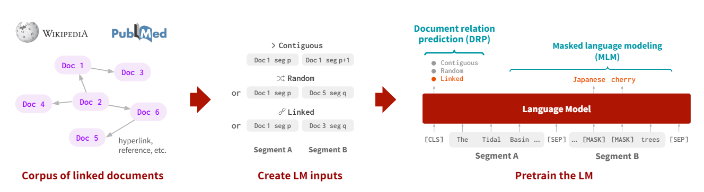
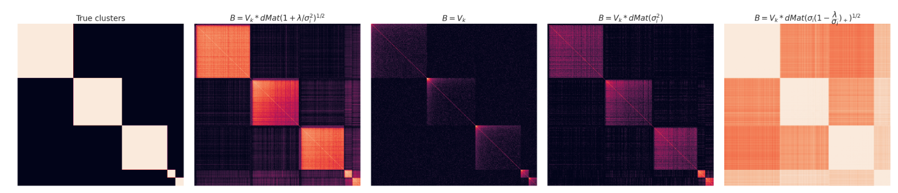
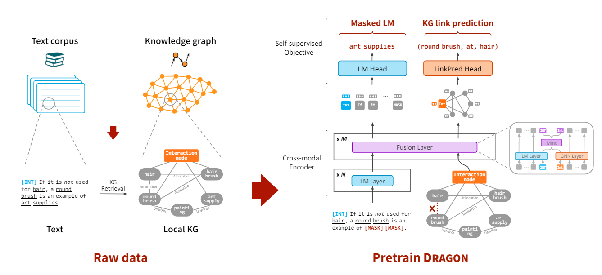
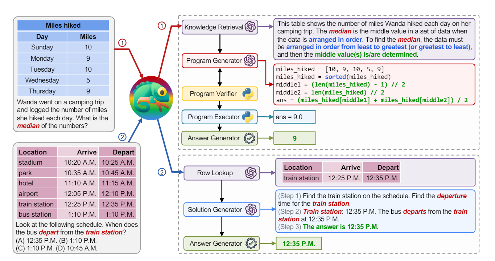
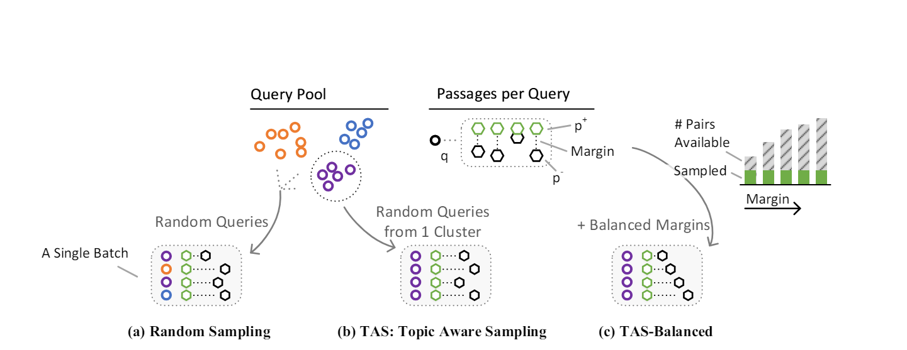
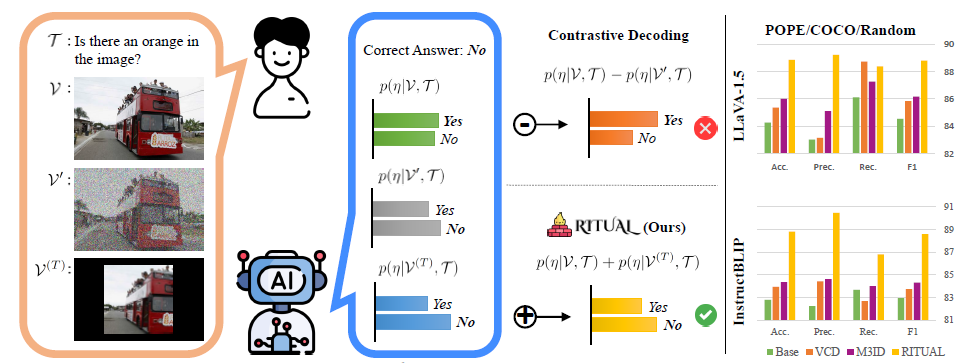

LinkBERT: Pretraining Language Models with Document Links

Is Cosine-Similarity of Embeddings Really About Similarity?

Deep Bidirectional Language-Knowledge Graph Pretraining

Chameleon: Plug-and-Play Compositional Reasoning with Large Language Models

Efficiently Teaching an Effective Dense Retriever with Balanced Topic Aware Sampling

RITUAL: Random Image Transformations as a Universal Anti-hallucination Lever in LVLMs